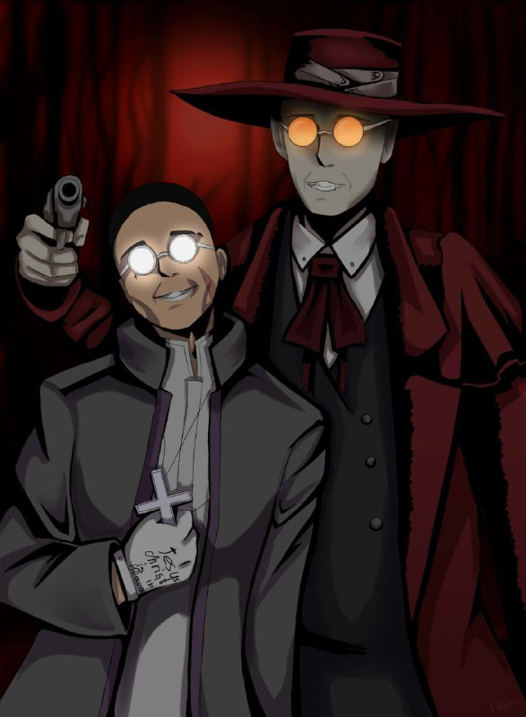

мои друзья
Я, по своей натуре очень общительный человек и легко могу найти общий язык с кем захочу, главное просто заинтересовать меня. Знакомых и приятелей просто не сосчитать, то одногруппники, то прошлые одноклассники и просто ребята с улицы. Меня знает на столько много людей, что обо мне даже ходят слухи.
В принципе, все хорошо ко мне относяться, есть ребята который я могу выделить в своей жизни, они многое для меня значат и помогут в любой ситуации. "Друг не следует за чужой мечтой.. друг - э тот, кто ищет свой собственный смысл жизни.. друг для меня это кто-то равный"
Говоря о хорошем, все рисунки на моем сайте сделаны моей замечательной подругой, вообще солнышко
На рисунке изображен я и мой друг Сергей
